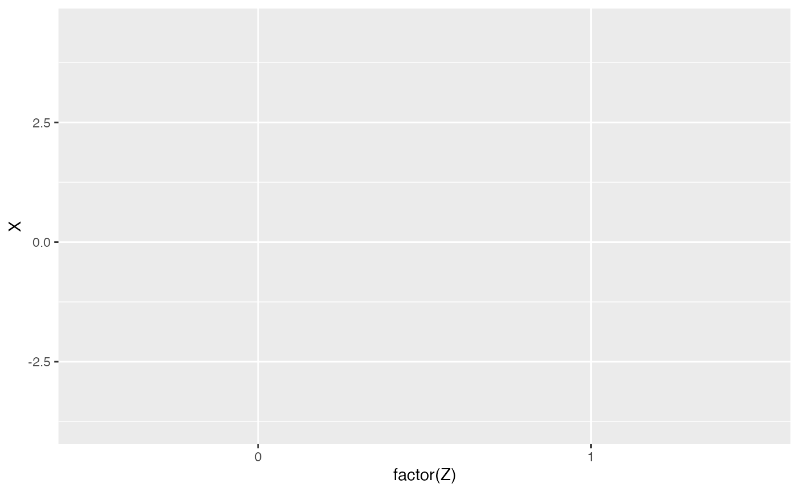

Instrumental Variables with Simulated Data
instrumental-variables.Rmd🎯 Instrumental Variables with Simulated Data
Instrumental Variables (IV) help identify causal effects when there is unobserved confounding. An instrument affects the treatment but has no direct path to the outcome.
1. 🧪 Simulate Confounded Data
set.seed(123)
n <- 1000
U <- rnorm(n) # unobserved confounder
Z <- rbinom(n, 1, 0.5) # instrument
X <- 0.5 * Z + 0.7 * U + rnorm(n) # treatment, influenced by instrument and confounder
Y <- 2 * X + 1 * U + rnorm(n) # outcome, influenced by treatment and confounder
data <- data.frame(Y, X, Z, U)
head(data)## Y X Z U
## 1 -3.6659226 -1.2133196 0 -0.56047565
## 2 -0.5926277 -0.4683815 0 -0.23017749
## 3 1.2321894 0.1889978 0 1.55870831
## 4 1.8893736 1.1764246 1 0.07050839
## 5 3.3253852 1.2108564 0 0.12928774
## 6 8.8949617 3.8277590 1 1.715064992. ⚠️ OLS is Biased Due to Unobserved Confounding
##
## Call:
## lm(formula = Y ~ X, data = data)
##
## Residuals:
## Min 1Q Median 3Q Max
## -4.4015 -0.8701 -0.0011 0.8749 4.0078
##
## Coefficients:
## Estimate Std. Error t value Pr(>|t|)
## (Intercept) -0.09824 0.04145 -2.37 0.018 *
## X 2.44974 0.03357 72.97 <2e-16 ***
## ---
## Signif. codes: 0 '***' 0.001 '**' 0.01 '*' 0.05 '.' 0.1 ' ' 1
##
## Residual standard error: 1.283 on 998 degrees of freedom
## Multiple R-squared: 0.8421, Adjusted R-squared: 0.842
## F-statistic: 5324 on 1 and 998 DF, p-value: < 2.2e-163. ✅ Use IV: Estimate via ivreg
iv_model <- ivreg(Y ~ X | Z, data = data)
summary(iv_model)##
## Call:
## ivreg(formula = Y ~ X | Z, data = data)
##
## Residuals:
## Min 1Q Median 3Q Max
## -4.30901 -0.88235 0.01353 0.94421 4.46543
##
## Coefficients:
## Estimate Std. Error t value Pr(>|t|)
## (Intercept) -0.01573 0.05564 -0.283 0.777
## X 2.12700 0.14094 15.091 <2e-16 ***
## ---
## Signif. codes: 0 '***' 0.001 '**' 0.01 '*' 0.05 '.' 0.1 ' ' 1
##
## Residual standard error: 1.341 on 998 degrees of freedom
## Multiple R-Squared: 0.8275, Adjusted R-squared: 0.8274
## Wald test: 227.7 on 1 and 998 DF, p-value: < 2.2e-164. 📊 Visualize the First Stage (Z → X)
ggplot(data, aes(x = factor(Z), y = X)) +
geom_boxplot(fill = "skyblue") +
labs(title = "First Stage: Instrument Z Effect on Treatment X", x = "Instrument (Z)", y = "Treatment (X)") +
theme_minimal()
5. ✅ IV Assumptions Recap
- Relevance: Z is correlated with X ✔️
- Exclusion Restriction: Z does not directly affect Y ❌ (U must not be affected by Z)
- Independence: Z is independent of unmeasured confounders (U)